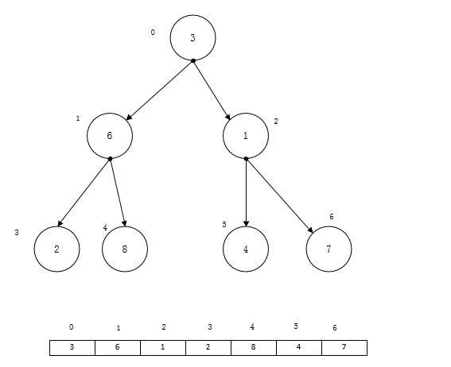
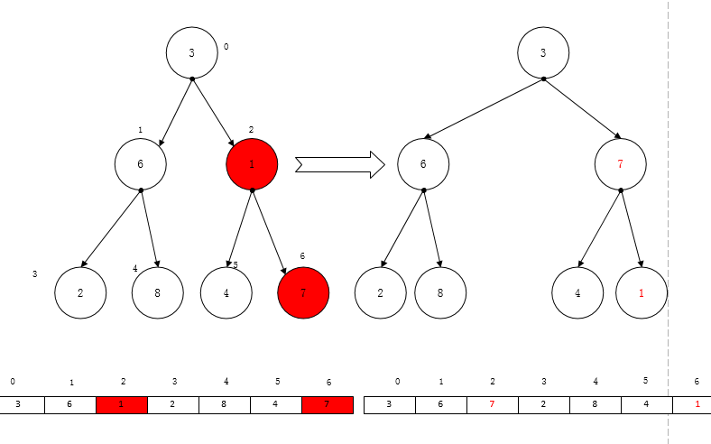
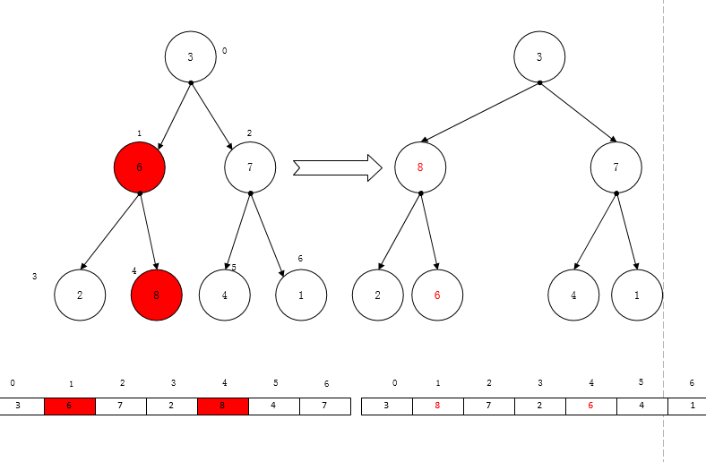
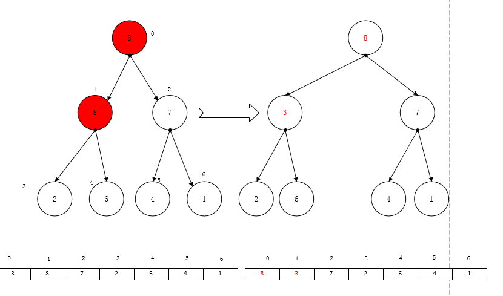

上一次说到了3种基本的排序算法，三种基本的排序算法时间复杂度都是O(n^2)，虽然比较简单，但是效率相对较差，因此后续有许多相应的改进算法，这次主要说说堆排序算法。
堆排序算法是对选择排序的一种优化。
那么什么是堆呢？堆是一种树形结构。在维基百科上的定义是这样的“给定堆中任意节点 P 和 C，若 P 是 C 的母节点，那么 P 的值会小于等于（或大于等于） C 的值”。
这句话通俗一点就是，树的根节点需要大于（小于）它的孩子节点，而每个左右子树都满足这个条件。当树的根节点大于它的左右孩子节点时称为大顶推，否则称为小顶堆。
排序算法的思路是这样的，首先将序列中的元素组织成一个大顶堆，将树的根节点放到序列的最后面，然后将剩余的元素再组织成一个大顶堆，然后放到倒数第二个位置，以此类推。
先假定它们的对应关系如下图所示:

我们从树的最后一个非叶子节点开始，从这个子树中选择最大的一个数，将它交换到子树的根节点，也就是如下图所示

接着再从后往前查找下一个非叶子节点


经过这样一轮，一直调整到树的根节点，让后将根节点放到序列的最后一个元素，接着再将剩余元素重新组织为一个新的堆，直到所有元素都完成排序
现在已经对堆排序的基本思路有了一定的了解，在写代码之前需要建立树节点与它在序列中的相关位置做一个对应关系，假设一个非叶子节点在序列中的位置为n，那么它的两个子节点分别是2n + 1与 2n + 2。而且小于n的一定是位于n前方的非叶子节点，所以在调整堆时，从n开始一直到0，前面的一定是非叶子节点，根据这点可以写出这样的代码
void HeapSort(int a[], int nLength)
{
//从最后一个非叶子节点开始调整
for (int n = nLength / 2 - 1; n >= 0; n–)
{
HeapAdjust(a, n, nLength);
}
for (int n = nLength - 1; n > 0; n--)
{
//取堆顶与最后一个叶子节点互换
int tmp = a[0];
a[0] = a[n];
a[n] = tmp;
//调整剩余堆
HeapAdjust(a, 0, n);
}}
上述代码首先取最后一个叶子节点，对所有非叶子节点进行调整，得到堆顶的最大元素。然后将最大元素与序列最后一个做交换，接着使用循环，对序列中剩余元素进行同样的操作。
调整堆时，首先比较子树的根节点与它下面的所有子节点，并保存最大数的位置，然后将最大数与根节点的数进行交换，这样一直进行，直到完成了堆根节点的交换。
1 | void HeapAdjust(int a[], int nIdx, int nLength) |
从算法上来看，它循环的次数与堆的深度有关，而二叉树的深度应该是log2(n) 向下取整，所以调整的时候需要进行log2(n)次调整，而外层需要从0一直到n - 1的位置每次都需要重组堆并进行调整，所以它的时间复杂度应该为O(nlogn), 它在效率上比选择排序要高，它的速度主要体现在每次查找选择最大的数这个方面。